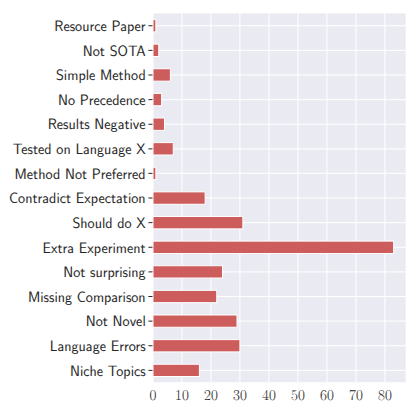
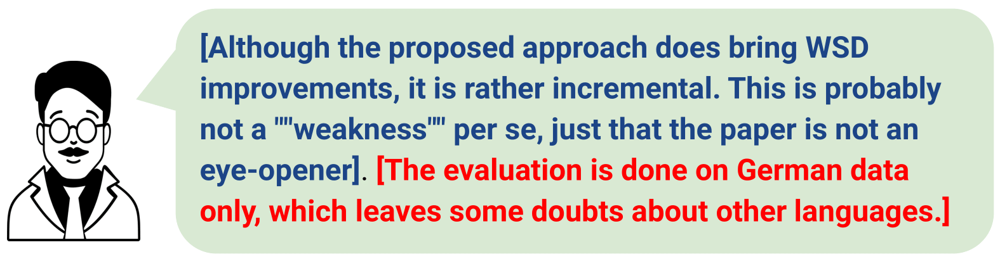
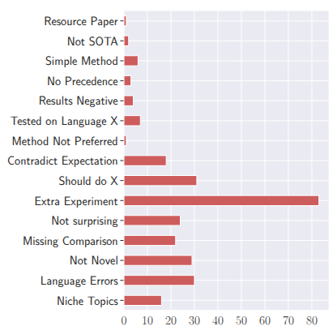

Out of the 18 classes of lazy thinking, the class corresponding to "The authors could also do extra experiment X" is the highest! This is an obvious finding given the growing pace of the field and the gradual evolution of NLP into ML. 
Peer review is a cornerstone of quality control in scientific publishing. With the increasing workload, the unintended use of ‘quick’ heuristics, referred to as lazy thinking, has emerged as a recurring issue compromising review quality. Automated methods to detect such heuristics can help improve the peer-reviewing process. However, there is limited NLP research on this issue, and no real-world dataset exists to support the development of detection tools. This work introduces LAZYREVIEW, a dataset of peer-review sentences annotated with finegrained lazy thinking categories. Our analysis reveals that Large Language Models (LLMs) struggle to detect these instances in a zeroshot setting. However, instruction-based finetuning on our dataset significantly boosts performance by 10-20 performance points, highlighting the importance of high-quality training data. Furthermore, a controlled experiment demonstrates that reviews revised with lazy thinking feedback are more comprehensive and actionable than those written without such feedback. We will release our dataset and the enhanced guidelines that can be used to train junior reviewers in the community.

Out of the 18 classes of lazy thinking, the class corresponding to "The authors could also do extra experiment X" is the highest! This is an obvious finding given the growing pace of the field and the gradual evolution of NLP into ML. 
@misc{purkayastha2025lazyreviewdatasetuncoveringlazy,
title={LazyReview A Dataset for Uncovering Lazy Thinking in NLP Peer Reviews},
author={Sukannya Purkayastha and Zhuang Li and Anne Lauscher and Lizhen Qu and Iryna Gurevych},
year={2025},
eprint={2504.11042},
archivePrefix={arXiv},
primaryClass={cs.CL},
url={https://arxiv.org/abs/2504.11042},
}